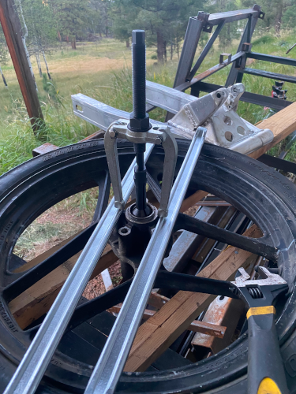
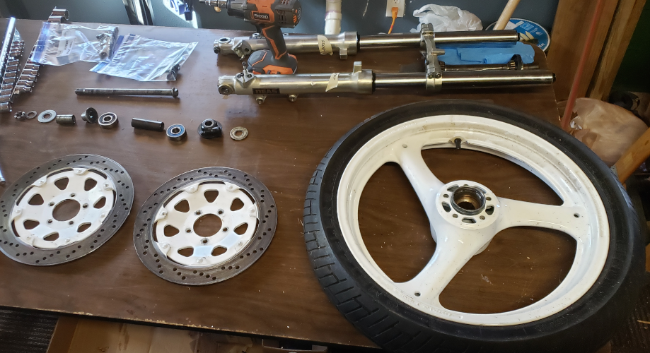
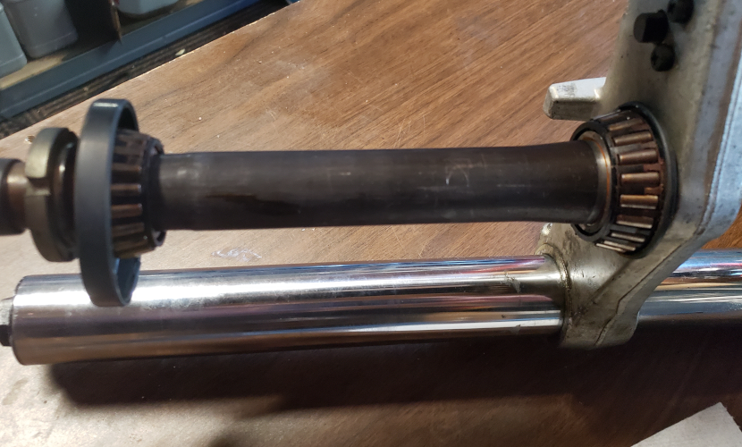
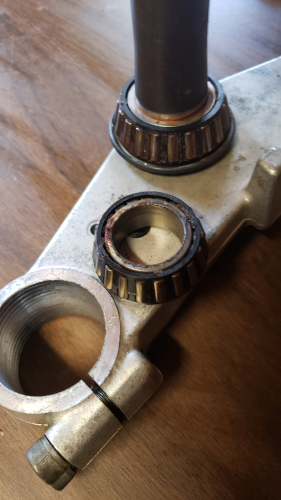
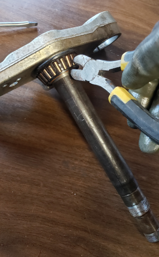
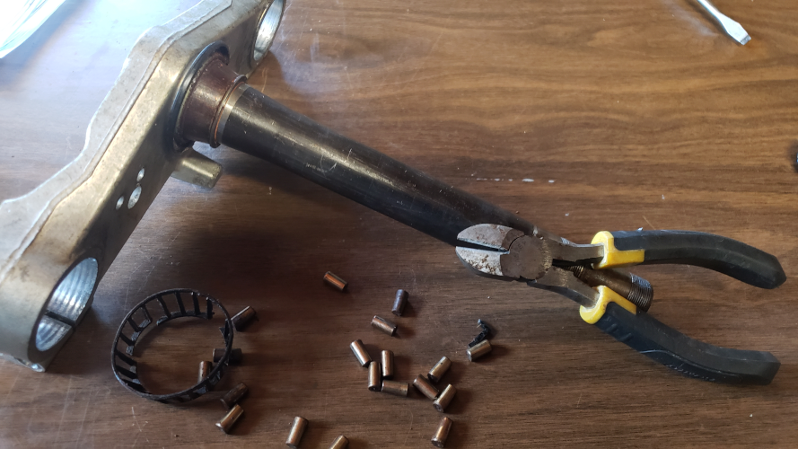
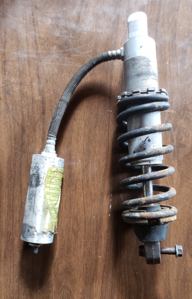
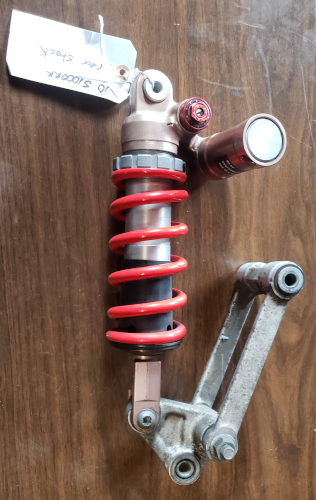

The frame was a bit easier to take apart than the engine. I started with removing the rear suspension I don't have any pictures from that as I was busy removing the swingarm axle.
I have mentioned the precense of rust prior to this point, and the swing arm is no exception. The axle was stuck in the swing arm and wouldn't budge. The axle is #16 in the image below.
I/we did manage to get the axle out, I layed the frame on its side, plugged the swingarm tube at the lower end, filled the tube with a rust dissolver and let it sit for a week, even after that I wasn't able to get it to move.... it rotated just find but in place, which told me it's the bearings that have rusted/fused to the axle.
Luckily I have friends that are a lot bigger than I, so with the help of my 6'3" 250lbs framer buddy we got the axle out in one piece, and the swing arm could be removed from the rest of the frame.
Next up was the bearings themselves, I destroyed the rusted up bearing to where only the outer casing (the fused part) is still sitting in the tube - I believe this is bearing #13 on the exploded view.

As the picture alludes, I had real difficulties getting that darn thing out, and had to purchase a Blind Bearing Puller this turned up to be a very usefull tool when dealing with old junk like this. The tool can create a tremendous pulling force, and with a flame on the tube the bearing casing finally let go, same deal with the other side.


The wheels came off and were torn down, the bearings in the 86' front wheel were rusted in place but my new tool yanked them out quick.
> Both the 88' Slingshot front and rear wheels seems to have been maintained better, the inner parts came out w/o a fight.
The steering bearings are pressed on and very tight. The top bearing came off just by pulling on it, the bottom bearing is stuck on there a lot harder, it's so stuck that the recommended approach of punching the bearing at an angle to slide it off the stem is not working, so the destructive way is the right way.
 So a little surgery was necessary 😁 first break the bearing "cage" that holds all the rollers, then cut that remaining bearing case/sleeve off the steering stem.
 The rear shock looks a bit tired, in fact it looks lousy. I've read it can be refurbished back to full operation again but how good is it ? I have no idea if it's even worth spending time/money on restoring it as there are rumors that a shock from a 2009-2011 BMW S1000rr fits. One part of me want to get the original shock back on where it belongs, another part tells me that the original shock was probably a great shock back in 1986, but I also think that a 20+ year more modern shock from BMW's flagship is likely an even better shock..... decisions... decisions...
 